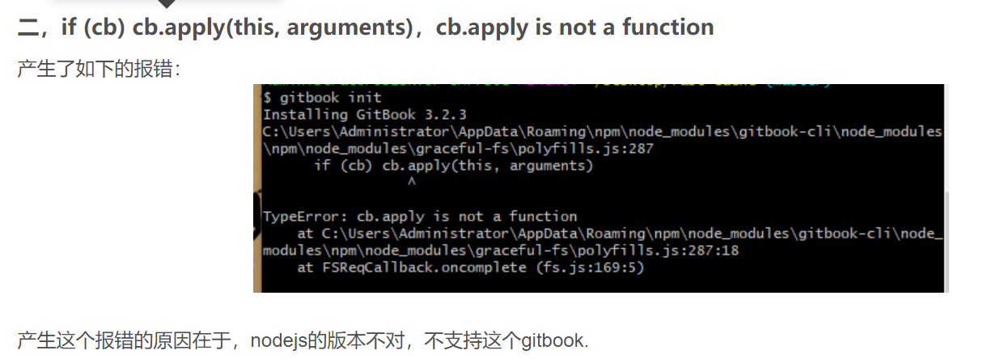
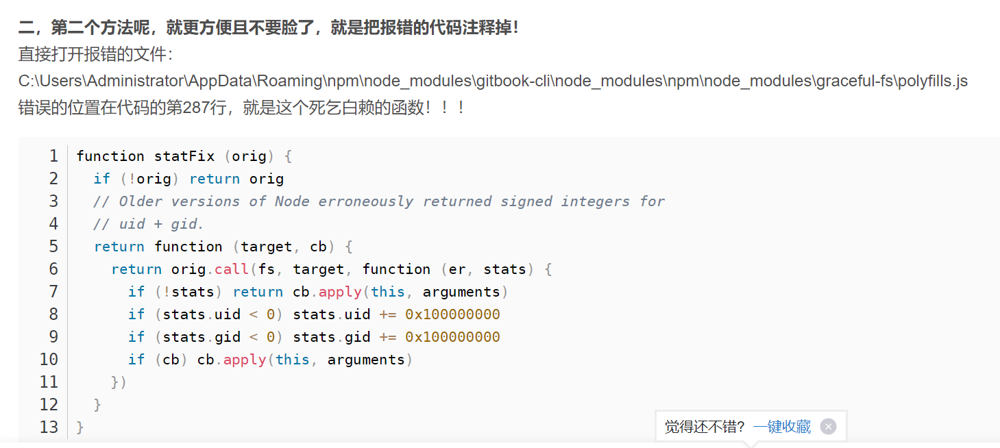

第零章
上传到Github仓库的master分支
为了提交方便，可以创建一个脚本文件commit.sh来自动执行将本地仓库push到远端仓库的指令，脚本如下
# 保存所有的修改
echo '执行命令：git add -A\n'
git add -A
# 把修改的文件提交
echo "执行命令：git commit -m 'update notebook CSAPP'\n"
git commit -m 'update gitbook'
# 将本地仓库推送至远程仓库
echo '执行命令：git push origin master\n'
git push origin master
编写好后，在终端运行以下命令即可：
$ bash commit.sh
上传到 Github 仓库的 gh-pages 分支
打包命令太多，为了部署方便，可以创建一个脚本文件 deploy.sh 来自动执行，内容如下：
# 构建Gitbook
echo '执行命令：gitbook build .'
gitbook build .
# 进入生成的文件夹
echo "执行命令：cd ./_book\n"
cd ./_book
# 初始化一个仓库，仅仅是做了一个初始化的操作，项目里的文件还没有被跟踪
echo "执行命令：git init\n"
git init
# 解决使用git add命令时报错LF will be replaced by CRLF的问题
echo '执行命令：git config auto.crlf true\n'
git config auto.crlf true
# 保存所有的修改
echo "执行命令：git add -A"
git add -A
# 把修改的文件提交
echo "执行命令：commit -m 'deploy gitbook'"
git commit -m 'deploy gitbook'
# 发布到 https://<USERNAME>.github.io/<REPO>
echo "执行命令：git push -f 仓库地址.git master:gh-pages"
git push -f 仓库地址.git master:gh-pages
# 返回到上一次的工作目录
echo "回到刚才工作目录"
cd -
文件保存后，在终端执行如下命令，把生成的项目推送到 github 仓库上的 gh-pages 分支：
$ bash deploy.sh
常用的Gitbook插件
[1]为什么要用插件？
Gitbook 默认自带以下 5 个插件：
highlight：代码高亮
search：导航栏查询功能（不支持中文）
sharing：右上角分享功能
font-settings：字体设置（最上方的"A"符号）
livereload：为 Gitbook 实时重新加载。
Gitbook 插件可以解决一些网站不太方便的地方，如侧边栏导航不能收缩，自带搜索不支持中文等问题。
[2]插件安装方法：
Step1：在项目的根目录中创建
book.json文件，然后在 plugins 参数中添加插件名。- Step2：使用
gitbook install来安装插件，重启服务gitbook serve或者重新打包gitbook build就能看见效果。
注意：
- 编写 json 时字符串不能用“单引号”括起，最后的那个不能有“逗号”。
- 如果要卸载自带的
font-settings，插件处应写成-fontsettings，中间不要加-。 gitbook install命令有时会出现问题，多试几次可能就好了。gitbook install命令安装慢，而且是全部插件都安装一遍，如果只安装一个插件的话建议使用npm命令安装。
以下是我配好的 book.json 文件，仅供参考。
{
"title": "标题",
"description": "描述信息",
"author": "作者",
"output.name": "site",
"language": "zh-hans",
"gitbook": "3.2.3",
"root": ".",
"plugins": [
"-lunr",
"-search",
"search-pro",
"expandable-chapters-small",
"splitter",
"back-to-top-button",
"expandable-chapters-small",
"-sharing",
"github",
"code",
"page-toc-button" ,
"tbfed-pagefooter",
"rss"
],
"pluginsConfig": {
"github": {
"url": "https://github.com/YGVICTOR/my_blog"
},
"hide-element": {
"elements": [".gitbook-link"]
},
"page-toc-button": {
"maxTocDepth": 2,
"minTocSize": 2
},
"tbfed-pagefooter": {
"copyright":"Copyright © 版权信息",
"modify_label": "该文件修订时间：",
"modify_format": "YYYY-MM-DD HH:mm:ss"
},
"rss":{
"title": "标题",
"description": "描述信息",
"author": "作者",
"feed_url": "https://xxx.xxx.xxx/rss",
"site_url": "https://xxx.xxx.xxx/"
}
}
}
注意，每次修改完上述文件后，需要执行
$ gitbook install
$ gitbook serve
常见错误
- 安装gitbook init和if (cb) cb.apply(this, arguments)，cb.apply is not a function


将下面三行代码注释掉即可
fs.stat = statFix(fs.stat)
fs.fstat = statFix(fs.fstat)
fs.lstat = statFix(fs.lstat)
- 安装mathjax-pro插件
# 切成v10.24.1，必须是10.x，再高报错
$ nvm install v10.24.1
$ nvm use 10.24.1
$ nvm alias default v10.24.1
# 安装gitbook
$ npm install gitbook-cli -g
# 安装mathjax
$ npm install -g mathjax@2.7.6
# 安装mathjax plugin，这步最重要！！！，之前gitbook install一直失败
$ npm install gitbook-plugin-mathjax
# 最终更新gitbook
$ gitbook install ./